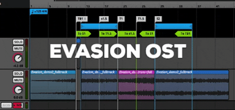

As audio programmer, I work on projects such as audio-plugins , standalone applications and other programs and algorithms.
I also create systems for and implement game audio .
For audio I mainly use C++ and for game audio implementation I mainly use C* , but I am also experienced with other languages.
Languages
Programming languages and libraries experiences include
During my internship at audiosoftware company Audio Ease, I designed and programmed on TransitionFX.
TransitionFX is a synthesiser optimalised for creating certain effects often used in media composition/sound design such as: risers, whooshes, stings, etc.
The synthesiser is made in C++ using the JUCE framework.
Developing a synthesiser from the ground up was a very interesting but heavy task, which I had grossly underestimated.
I came across a lot of very interesting and challenging obstacles, from which I have learned a lot.
One great example of this is that when I started coding the project I had originally given myself one week to make an amplitude envelope.
However I found out about so many options and ways to do this that I had created more then 10 different types before I was finished(picture 2).
I am still continuing developing TFX and am currently testing with some sound designers and further designing the GUI.
Please feel free to contact me with any questions or for updates on the project!
Musart is a project which I have been using to research the relation between visuals and audio.
The application allows the user to draw freely like in programs such as Paint.
Based on the visuals, the application then generates audio using samples and synthesis.
Visual parameters the application currently analyses at are: shapes, colors and density.
I am still updating Musart and adding more features and parameters to analyse.
Something I found out very early on while working on this project is that the possibilities really are endless.
Musart has been created using C++ and the Open Frameworks framework.
Systems Design / Implementation

Implementation
As audio programmer I enjoying designing game audio systems and implementing them.
For this I mainly work with FMOD and Unity, but am currently working on a system of my own.
The images show the progress of a soundtrack in FMOD and its system design for a (student) game I am currently working on.